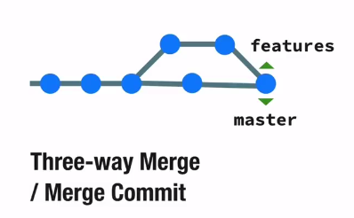

Rebase
Intro
-
salah satu cara untuk kita memilih yang namanya
Git Workflow
-
sebelum2nya Git Workflow kita menggunakan
marge
-
rebase cara lain didalam alur pengerjaannya yang tidak
menggunakan merging
Merge VS Rebase

- ketika project besar muncul problem
- commitnya jadi banyak
-
jika pakai rebase maka branch features akan maju ke
commit terakhir master
- kalo kita merge maka akan fast-forward